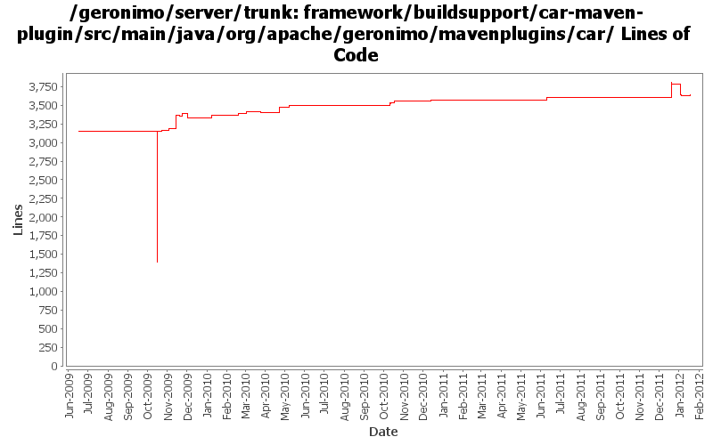

[root]/framework/buildsupport/car-maven-plugin/src/main/java/org/apache/geronimo/mavenplugins/car

| Author | Changes | Lines of Code | Lines per Change |
|---|---|---|---|
| Totals | 118 (100.0%) | 3326 (100.0%) | 28.1 |
| djencks | 61 (51.7%) | 2696 (81.1%) | 44.1 |
| rickmcguire | 11 (9.3%) | 224 (6.7%) | 20.3 |
| gawor | 23 (19.5%) | 210 (6.3%) | 9.1 |
| xuhaihong | 13 (11.0%) | 122 (3.7%) | 9.3 |
| genspring | 9 (7.6%) | 73 (2.2%) | 8.1 |
| violalu | 1 (0.8%) | 1 (0.0%) | 1.0 |
try to make DependencyChangeMojo ignore corrupted dependencies.xml files
14 lines of code changed in 1 file:
GERONIMO-6249 use extender pattern (in DependencyManager) instead of ConfigurationActivator
0 lines of code changed in 2 files:
minor simplification
0 lines of code changed in 2 files:
GERONIMO-6240 Modify configs so that they use features as the bootstrap, and fix a few compile and test errors. Servers build but do not fully start
1 lines of code changed in 1 file:
GERONIMO-6240 Fix the InstallModulesMojo to work without osgi or a kernel
3 lines of code changed in 1 file:
GERONIMO-6240 Make several base geronimo functions (kernel, deployer, etc) DS services and make the car-maven-plugin take advantage of that. Server assembly doesn't work yet, builds framework.
440 lines of code changed in 8 files:
GERONIMO-6240 fire up a karaf instance we assembled in target for the framework.
32 lines of code changed in 1 file:
GERONIMO-6240 update some framework and karaf versions for r4.3 and karaf 3
3 lines of code changed in 1 file:
GERONIMO-6240 DependencyManager seems to need its lifecycle methods called to work properly
4 lines of code changed in 1 file:
GERONIMO-6240 modify car-maven-plugin to install karaf kars and features, use this for the base server
3 lines of code changed in 1 file:
GERONIMO-5734 Enable sharelib in osgi based geronimo
3 lines of code changed in 1 file:
GERONIMO-6003 Enable jaxws script files in the bin directory
43 lines of code changed in 1 file:
GERONIMO-5885 Upgrade karaf from 2.1.2 to 2.2.1-SNAPSHOT
1 lines of code changed in 1 file:
We need this property in car-maven-plugin to build ejb module plugin correctly.
1 lines of code changed in 1 file:
GERONIMO-5825 Provide a option to prevent tar assemblies from generating.
0 lines of code changed in 2 files:
Replace hard code EBA group id "application" with a CONSTANT.
1 lines of code changed in 1 file:
don't start karaf console when using the plugin
1 lines of code changed in 1 file:
no such packages
0 lines of code changed in 1 file:
remove some unused dependencies
1 lines of code changed in 1 file:
Remove some nonexistent package names
1 lines of code changed in 1 file:
GERONIMO-5731 unset system properties car-maven-plugin may set
292 lines of code changed in 3 files:
GERONIMO-5702: Update for Karaf 2.1.2. Based on patch from Viola Lu
1 lines of code changed in 1 file:
GERONIMO-5575 car-maven-plugin EBA plugin build failed to include the eba module in the target plugin car.
33 lines of code changed in 1 file:
Correct a typo here.
1 lines of code changed in 1 file:
GERONIMO-5404 leverage the Artifact.equal() for dependency detect.
7 lines of code changed in 1 file:
only one module we can include
1 lines of code changed in 1 file:
fix build break - check for null
4 lines of code changed in 1 file:
GERONIMO-5404 Uninstallation does not remove the installed unique dependencies.
29 lines of code changed in 1 file:
update to latest spec versions
1 lines of code changed in 1 file:
GERONIMO-5400 Set the openejb osgi-friendly logger implementation if it is not set, patch from Han Hong Fang
4 lines of code changed in 1 file:
GERONIMO-5205: On Equinox use ClassLoadingHook to add necessary JPA provider imports to the persistence bundle.
1 lines of code changed in 1 file:
switch to karaf 1.6
1 lines of code changed in 1 file:
GERONIMO-5290 Fix access to maven data structures to work with maven 3
26 lines of code changed in 6 files:
Clean up temporary files - workaround for a bug in plexus archiver which leaves lots of 'archived-file-set' files in /tmp
73 lines of code changed in 1 file:
GERONIMO-4680 get class transformers working somewhat in karaf. Make karaf script start geronimo
1 lines of code changed in 1 file:
GERONIMO-5092 corba plugins start, handle delegate gets into jndi, doesn't seem to break ejbs
3 lines of code changed in 1 file:
GERONIMO-5249 use Karaf's proxy login module to load login modules from correct bundles
4 lines of code changed in 1 file:
more spec updates
0 lines of code changed in 1 file:
remove activation and saaj packages from the system bundle
0 lines of code changed in 1 file:
GERONIMO-5207 Replace jaxws api version from JRE with Geronimo jaxws 2.2 API bundle.
0 lines of code changed in 1 file:
(32 more)